Start with a volume that's 50% full, with the data evenly distributed.
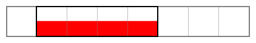Run resize on the volume. First relocate the data to the beginning of the disk.
Data cost: 50%
Then, shrink the volume:
Data cost: 1%
Finally, byte-copy the entire volume to its new location.
Data cost: 100%
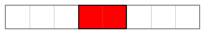Total data cost: 150%
Start with a volume that's 50% full, with the data evenly distributed.
Use a tool (unwritten) to relocate the data to the end of the disk.
Data cost: 50%
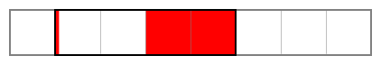Create new metadata for the new data locations and shrink the volume.
Data cost: 2%
Total data cost: 52% (~3x faster)
Start with a volume that's 75% full, with the data evenly distributed.
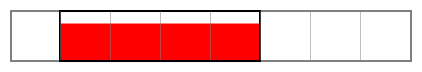Run resize on the volume. First relocate the data to the beginning of the disk.
Data cost: 19%
Then, shrink the volume:
Data cost: 1%
Finally, byte-copy the entire volume to its new location.
Data cost: 100%
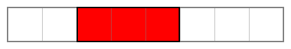Total data cost: 120%
Start with a volume that's 75% full, with the data evenly distributed.
Use a tool (unwritten) to relocate the data to the end of the disk.
Data cost: 19%
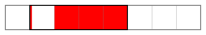Create new metadata for the new data locations and shrink the volume.
Data cost: 2%
Total data cost: 21% (~6x faster)
Resize a volume:
Start with a volume that's 50% full, with the data evenly distributed.
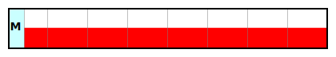Clear some space for the new filesystem metadata
Data cost: 1%
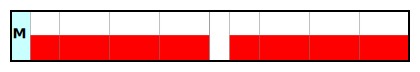Use a tool (unwritten) to relocate the data to the end of the disk. Then create some new metadata.
Data cost: 51%

Finally, shrink the volume:
Data cost: 1%

Total data cost: 52%
Aim: Copy a volume to a smaller region with as little data copying as possible.
Start with a volume that's 50% full, with the data evenly distributed.
Source: 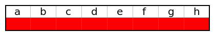The Destination isn't big enough for the entire Source volume, but it is big enough if the Source were shunk first.
Destination:Using the Source's filesystem bitmap, copy Source's data (from sectors a, b, c, d, e) to the Destination.
Data cost: 63% (5/8)
Destination: 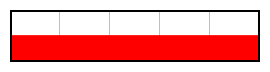Resize the Destination metadata to match the smaller size. Any requests for data beyond Destination's limits should be redirected to Source.
This has now moved and resized Source without having to make and changes to Source
Data cost: 39% (3/8)
Destination: 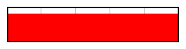Total data cost: 102%
Start with a volume that's 50% full, with the data evenly distributed.
Source:The Destination isn't big enough for the entire Source volume, but it is big enough if the Source were shunk first.
Destination:The only way to do this, would be to shrink Source...
Data cost: 39% (3/8)
Source:Shrink the Source volume...
Then byte-copy Source to Destination.
Data cost: 100%
Source: 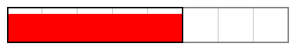Finally, restore Source's original size.
Data cost: 1%
Source:Total data cost: 140%
To compare the efficiency of the move strategies:
The optimal result is where: